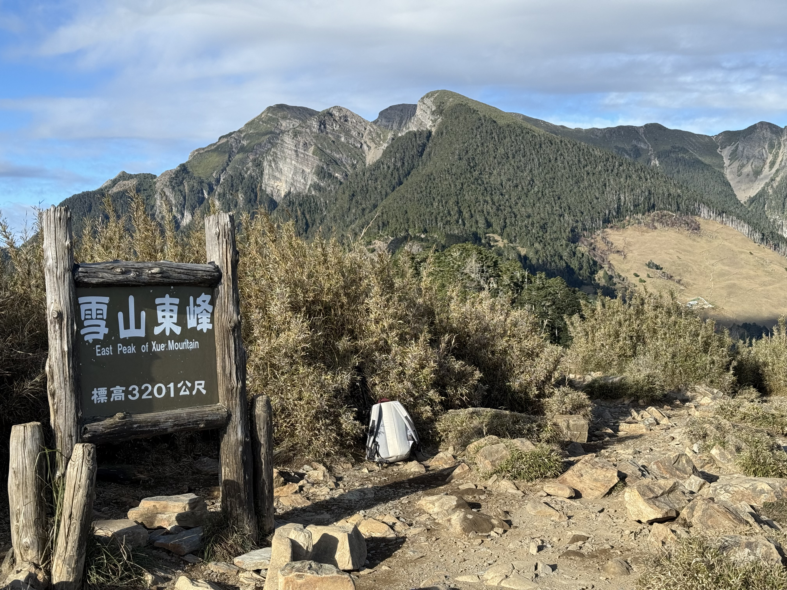

雪山東峰單攻｜百岳新手入門首選 展望+百岳一次收
一、 雪山東峰簡介
雪山東峰海拔 3,201 公尺，位於台中市和平區，為台灣百岳排名第 74。從大水池登山口起登路徑清晰，是許多百岳新手的首選。
二、 行程規劃建議
路線走法多元，志在東峰可選擇單攻，體力好的山友可以考慮一起撿主峰。
🟢 雪山東峰新手友善
- 單攻：來回約 10k，建議抓 6-7 小時（含休息）。優點：可輕裝出發。
🟡 雪主東進階挑戰
- 單攻：來回約 22k，建議抓 15小時（含休息）。凌晨 02:00 起登，12:00 前如果尚未過圈谷，建議撤退，以免摸黑。優點：一次撿完兩座，CP值高。
三、 實際行程紀錄
這次出團動機是上課剛好跟組員們聊到好久沒上山，聽著大家分享近一次的爬山經驗，腳突然癢了起來，便約定等課程結束要一起爬山！也找了之前一起爬塔曼山的朋朋，就這樣成團！ 這次出團成員：ㄚ純、Mark、阿巧、阿瑤，共4人，大家平常都有運動習慣。
01. 行前準備
(1) 裝備清單
| 必備物品 | 衣物類 | 裝備類 |
|---|---|---|
|
身分證/健保卡 入山證/入園證 丹木斯/紅景天 離線地圖 GPX |
短袖排汗T GORE-TEX 外套 羽絨外套 Leggings 毛帽 圓盤帽 羊毛襪 圍脖 |
隨身小包 19L MR攻頂包 GORE-TEX 登山鞋 登山杖 雨衣褲 頭燈/備用電池 行充 衛生紙 濕紙巾 小塑膠袋 護唇膏 醫藥包 主餐 1000ml水+500ml熱水 行動糧 |
一些小建議：
1. 如果沒有百岳經驗，行前可先吃預防高山症的藥，行前8小時吃一顆，當天開爬前半小時再吃半顆（劑量、多久前要吃還是以藥師告知為主唷），丹木斯藥局大多可買到（南部5元/顆，北部10元/顆），有些藥師也會改開預防肺水腫/腦水腫功效的藥。
2. 爬了那麼多座山，圍脖對我來說算是一個蠻好用的小物，除了圍在脖子保暖，有時高海拔冷空氣吸了會不太舒服，就會狂流鼻涕狂吸鼻子，這時圍脖就可以拿來當面罩，還可以當環保衛生紙（開玩笑的）。
3. 單攻主餐我通常都直接買便利商店的御飯糰或貝果，速吃+補充碳水，追求營養均可以再帶幾顆水煮蛋、切片水果或肉乾。
4. 行動糧以能放進去隨身小包的能量果膠、巧克力、鹽錠（鹽糖或梅片也行）為主，方便行走時能快速補充熱量。
(2) 申請項目
| 項目 | 是否需要 / 備註 |
|---|---|
| 入園證 | O（雪霸國家公園） |
| 入山證 | X |
02. 實際過程
👤 成員：ㄚ純、Mark、阿巧、阿瑤，共4人，大家平常都有運動習慣
👣 距離：9.35k
⌚ 時間：7:44:56
🔝 總爬升：1,027m
| 11/22 Day 0 | 11/23 Day 1 | ||
|---|---|---|---|
| 時間 | 地點 | 時間 | 地點 |
| 13:30 | 北車集合 | 03:30 | 雪山登山口 |
| 16:00 | 院長牛肉麵+7-11採買 | 04:30 | 七卡山莊 |
| 18:30 | 環清宮 | 06:00 | 哭坡前大平台 |
| 07:30 | 雪山東峰 | ||
| 11:30 | 雪山登山口 | ||
13:30 北車集合，從宜蘭開往武陵，車程預計4小。中途在院長牛肉麵吃了午晚餐，老闆很好客，看到我們多點一份燙青菜，叫我們不用多點，可以幫我們在牛肉麵裡加菜，但還是收了燙青菜的錢 XD 吃飽喝足在附近7-11補給後就直接開往環清宮，沿途趁機打了2朵菇，身為皮克敏資深玩家，荒郊野外的菇不用搶真快樂~
18:30 抵達環清宮，宮內停車場位置已停滿，便停在斜坡下來左前方民宅前的小空地。明天 02:30 要起床，趕緊洗漱整理裝備，20:00 準時躺床睡覺。 整體睡眠品質還不錯，雖然有鼾聲也聽得到隔壁間的對話，不過床位乾淨，床跟床之間有獨立簾子可拉上，棉被也有南部陽光的香味， 比起睡七卡山莊，環清宮也是不錯的選擇，要爬雪霸系列山頭的山友，像是志佳陽、桃山喀拉業等等，也可列入考慮， 不過建議先電話預訂，一晚一人500元現場付現，缺點就是到登山口大概還需要 20分鐘車程，規劃行程記得預留一點時間~


02:30 起床，03:00 完妝/裝後便出發前往雪山登山口。
03:30 抵達停車場，沿途有看到兩個停車場，不過爬文說有三個，我們停在第一停車場，很幸運還有空位，這是離雪山登山服務站最近的地方，
走一小段木棧階梯便來到服務站，大家可能還沒睡醒，3個女孩都沒發現上到男廁，下山才發現走錯棚，溫馨提醒女廁在轉角轉過去那側喔。
儀錶板顯示雪山東峰目前3.9度，投遞入園證意外瞥見一旁販售冰淇淋的標誌，但商店還沒開，心凍心動同時，只能等下山再吃惹。


03:50 起登，沿途標示清楚，都是緩升路況也算好走，跟著標示走基本上不會迷路。 04:30 抵達七卡山莊，星空超美，不過山屋的鼾聲提醒我們得降低音量，小休一下拍個照，便繼續前行。

05:47 來到一個展望極佳的路段欣賞雲海及天色漸亮的天空。

06:00 抵達哭坡前大平台，為了等 06:34 日出，冷到瑟瑟發抖，只能尋覓微弱的陽光，讓身子暖和一點。 拍照玩樂的同時，等到紅澄澄的蛋黃冒出來了！這一刻大家似乎默默有了一個共識：爬到東峰就好，此趟已心滿意足。 在平台遇到一位爬了N遍的大哥，大哥這趟準備撿主東，聽到我們只撿東峰，便開始勸說以我們的腳程撿完主峰再下山綽綽有餘， 叫我們跟著他爬，我們很感謝大哥的邀約，只是這一趟我們只想好好享受美景，沒有想讓自己太累 XD

06:30 離開大平台，沿途的展望讓人心情愉悅，07:00 經過哭坡的牌子，很意外的是長在地上 XD


07:35 抵達雪山東峰！ 在三角點遇到一位獨攀勇者，無袖+短褲也是要撿主東的山友，山友很專業的指導我們哪些角度拍起來很讚，就這樣在山頂玩了半個小時，身體又冷到瑟瑟發抖。

雪山東峰的展望極佳，面對三角點的牌子，由右到左環繞一圈，雪主、雪北、武陵四秀、南胡群峰盡收眼底。 回程經過主峰叉路口路牌，雪山主峰、北稜線一覽無遺。

10:00 回到七卡山莊，進去裡面晃了一圈，只剩下幾個床位還有山友的裝備，在山莊小休補給曬個日光浴，遍繼續往登山口前進。

11:00 抵達服務站，有別凌晨起登的冷清，大家都把握好天氣出門踏青，黑水池、服務站商店已充滿人潮，我們也不忘初衷，跑去買了冰淇淋~ 一個60元買了3種口味，有草莓、紅心芭樂、桂花烏龍，個人最愛桂花烏龍，茶味很濃，不輸台北的阿洋，下山後來一口身心舒暢，用冰淇淋結束這回合！